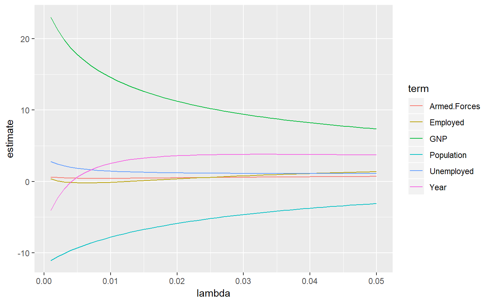
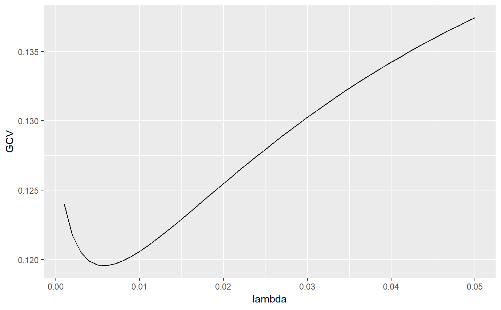
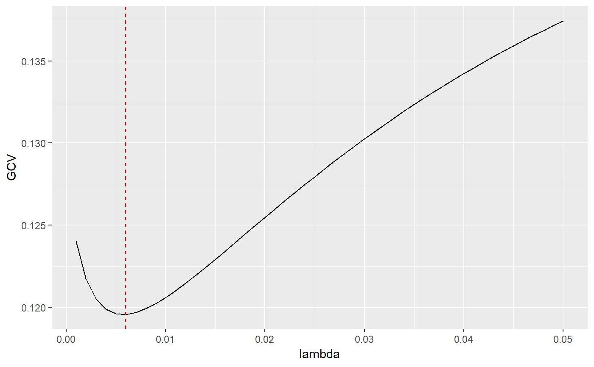

R/mass-ridgelm-tidiers.R
ridgelm_tidiers.RdThese methods tidies the coefficients of a ridge regression model chosen at each value of lambda into a data frame, or constructs a one-row glance of the model's choices of lambda (the ridge constant)
# S3 method for ridgelm tidy(x, ...) # S3 method for ridgelm glance(x, ...)
| x | An object of class "ridgelm" |
|---|---|
| ... | extra arguments (not used) |
All tidying methods return a data.frame without rownames, whose structure depends on the method chosen.
tidy.ridgelm returns one row for each combination of
choice of lambda and term in the formula, with columns:
choice of lambda
generalized cross validation value for this lambda
the term in the ridge regression model being estimated
estimate of scaled coefficient using this lambda
Scaling factor of estimated coefficient
modified HKB estimate of the ridge constant
modified L-W estimate of the ridge constant
choice of lambda that minimizes GCV
#> # A tibble: 6 x 5 #> lambda term estimate scale xm #> <dbl> <chr> <dbl> <dbl> <dbl> #> 1 0 GNP 25.4 96.2 388. #> 2 0 Unemployed 3.30 90.5 319. #> 3 0 Armed.Forces 0.752 67.4 261. #> 4 0 Population -11.7 6.74 117. #> 5 0 Year -6.54 4.61 1954. #> 6 0 Employed 0.786 3.40 65.3fit2 <- MASS::lm.ridge(y ~ ., longley, lambda = seq(0.001, .05, .001)) td2 <- tidy(fit2) g2 <- glance(fit2) # coefficient plot library(ggplot2) ggplot(td2, aes(lambda, estimate, color = term)) + geom_line()# add line for the GCV minimizing estimate ggplot(td2, aes(lambda, GCV)) + geom_line() + geom_vline(xintercept = g2$lambdaGCV, col = "red", lty = 2)